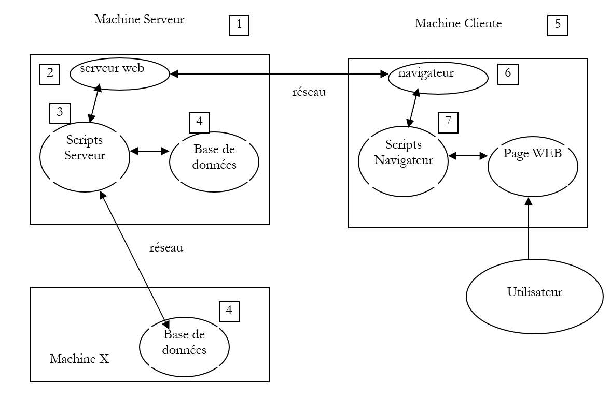
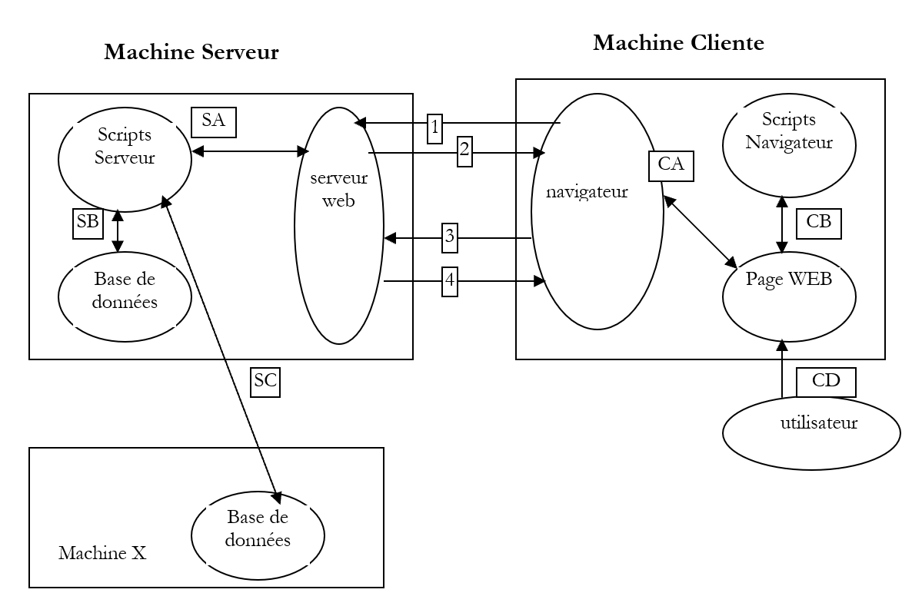
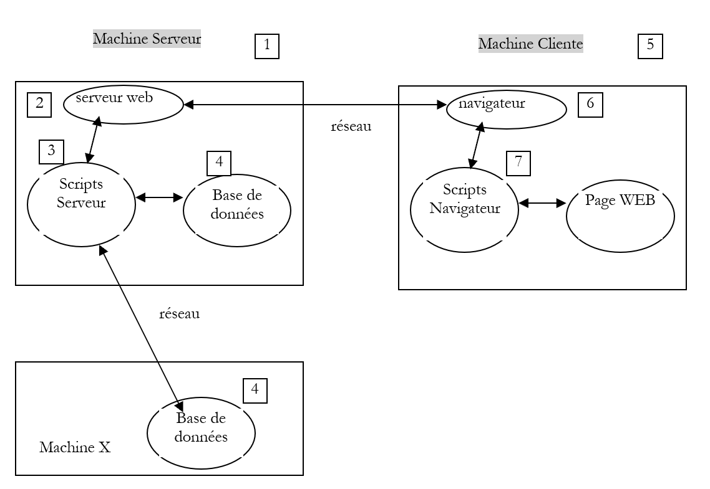
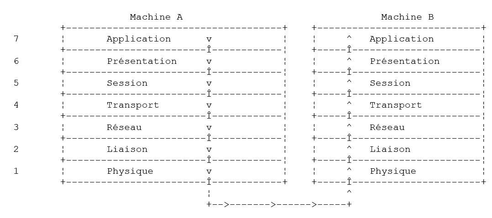
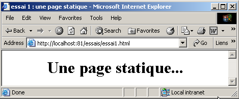
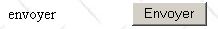

2. الأساسيات
في هذا الفصل، نقدم أساسيات برمجة الويب. الهدف الأساسي منه هو تعريفك بالمبادئ الرئيسية لبرمجة الويب قبل تطبيقها عمليًا باستخدام لغة وبيئة محددة. ويتضمن الفصل العديد من الأمثلة التي نشجعك على تجربتها لتتعرّف تدريجيًا على فلسفة تطوير الويب.
2.1. : مكونات تطبيق الويب

رقم | الدور | أمثلة شائعة |
نظام تشغيل الخادم | لينكس، ويندوز | |
خادم الويب | أباتشي (لينكس، ويندوز) IIS (NT)، PWS (Win9x) | |
البرامج النصية من جانب الخادم. يمكن تنفيذها بواسطة وحدات الخادم أو بواسطة برامج خارجية عن الخادم (CGI). | PERL (Apache، IIS، PWS) VBSCRIPT (IIS، PWS) JAVASCRIPT (IIS، PWS) PHP (Apache، IIS، PWS) JAVA (Apache، IIS، PWS) C#، VB.NET (IIS) | |
قاعدة البيانات - يمكن أن تكون على نفس الجهاز الذي البرنامج الذي يستخدمها أو على جهاز آخر عبر الإنترنت. | Oracle (Linux، Windows) MySQL (لينكس، ويندوز) Access (ويندوز) SQL Server (ويندوز) | |
نظام تشغيل العميل | Linux، Windows | |
متصفح الويب | نتسكيب، إنترنت إكسبلورر | |
نصوص برمجية يتم تنفيذها على جانب العميل داخل المتصفح. لا يمكن لهذه البرامج النصية الوصول إلى أقراص جهاز العميل. | VBScript (IE) JavaScript (IE، Netscape) PerlScript (IE) تطبيقات Java الصغيرة |
2.2. تبادل البيانات في تطبيق ويب باستخدام نموذج

جهاز العميل الخادم
الرقم | الدور |
يطلب المتصفح عنوان URL للمرة الأولى (http://machine/url). لا يتم تمرير أي معلمات. | |
يرسل خادم الويب صفحة الويب الخاصة بعنوان URL هذا. قد تكون هذه الصفحة ثابتة أو تم إنشاؤها ديناميكيًا بواسطة برنامج نصي من جانب الخادم (SA) قد يكون استخدم محتوى من قواعد البيانات (SB، SC). هنا، سيكتشف البرنامج النصي أن عنوان URL قد طُلب بدون أي معلمات وسيقوم بإنشاء صفحة الويب الأولية. يتلقى المتصفح الصفحة ويعرضها (CA). قد تكون البرامج النصية من جانب المتصفح (CB) قد عدلت الصفحة الأولية التي أرسلها الخادم. بعد ذلك، من خلال التفاعلات بين المستخدم (CD) والبرامج النصية (CB)، سيتم تعديل صفحة الويب. على وجه الخصوص، سيتم ملء النماذج. | |
يقوم المستخدم بإرسال بيانات النموذج، والتي يجب إرسالها بعد ذلك إلى خادم الويب. يطلب المتصفح عنوان URL الأولي أو عنوانًا آخر، حسب الاقتضاء، ويقوم في الوقت نفسه بنقل قيم النموذج إلى الخادم. ويمكنه استخدام طريقتين لهذا الغرض: GET و POST. عند استلام طلب العميل، يقوم الخادم بتشغيل البرنامج النصي (SA) المرتبط بعنوان URL المطلوب، والذي سيكتشف المعلمات ويعالجها. | |
يقوم الخادم بتسليم صفحة الويب التي تم إنشاؤها بواسطة البرنامج (SA، SB، SC). هذه الخطوة مطابقة للخطوة 2 السابقة. ويستمر الاتصال الآن وفقًا للخطوتين 2 و 3. |
2.3. موارد مفيدة حول " "
فيما يلي قائمة بالموارد الخاصة بتثبيت واستخدام أدوات معينة لتطوير الويب. يوفر الملحق إرشادات التثبيت لهذه الأدوات.
http://www.apache.org - Apache: التثبيت والتنفيذ، O'Reilly | |
http://www.microsoft.com | |
http://www.activestate.com - البرمجة بلغة Perl، لاري وول، أورايلي - تطبيقات CGI في بيرل، نويس وفرومانز، أورايلي - وثائق HTML المرفقة مع Active Perl | |
http://www.php.net - البرمجة على الويب باستخدام PHP، لاكروا، إيرول - دليل مستخدم PHP متوفر على موقع PHP | |
http://msdn.microsoft.com/scripting/vbscript/download/vbsdoc.exe http://msdn.microsoft.com/scripting/default.htm?/scripting/vbscript - الواجهة بين الويب وقواعد البيانات في نظام WinNT، أليكس هومر، Eyrolles | |
http://msdn.microsoft.com/scripting/jscript/download/jsdoc.exe http://developer.netscape.com/docs/manuals/index.html | |
http://developer.netscape.com/docs/manuals/index.html | |
http://www.sun.com - JAVA Servlets، جيسون هانتر، أورايلي - برمجة الشبكات باستخدام Java، إليوت روستي هارولد، أورايلي - JDBC و Java، جورج ريس، أورايلي | |
http://www.mysql.com http://www.oracle.com - دليل MySQL متاح على موقع MySQL - Oracle 8i على Linux، جيل بريارد، Eyrolles - Oracle 8i على NT، جيل بريارد، Eyrolles |
2.4. الرموز
فيما يلي، سنفترض أن عددًا من الأدوات قد تم تثبيتها وسنستخدم الرموز التالية:
الرموز | المعنى |
جذر شجرة دليل خادم Apache | |
الدليل الجذر لصفحات الويب التي يقدمها Apache. يجب أن تكون صفحات الويب موجودة ضمن هذا الدليل الجذر. وبالتالي، فإن عنوان URL http://localhost/page1.htm يتوافق مع الملف <apache-DocumentRoot>\page1.htm. | |
جذر شجرة الدلائل المرتبطة بالاسم المستعار cgi-bin، حيث يمكن وضع نصوص CGI الخاصة بـ Apache. وبالتالي، فإن عنوان URL http://localhost/cgi-bin/test1.pl يتوافق مع الملف <apache-cgi-bin>\test1.pl. | |
جذر صفحات الويب التي يقدمها PWS. يجب أن تكون صفحات الويب موجودة تحت هذا الجذر. وبالتالي، فإن عنوان URL http://localhost/page1.htm يتوافق مع الملف <pws-DocumentRoot>\page1.htm. | |
جذر شجرة دليل Perl. عادةً ما يوجد الملف القابل للتنفيذ perl.exe في <perl>\bin. | |
جذر شجرة دليل PHP. عادةً ما يوجد الملف القابل للتنفيذ php.exe في دليل <php>. | |
جذر شجرة دليل Java. توجد الملفات التنفيذية لـ Java في <java>\bin. | |
جذر خادم Tomcat. يمكن العثور على أمثلة لـ servlets في <tomcat>\webapps\examples\servlets وأمثلة لصفحات JSP في <tomcat>\webapps\examples\jsp |
بالنسبة لكل من هذه الأدوات، راجع الملحق الذي يوفر إرشادات التثبيت.
2.5. صفحات الويب الثابتة، صفحات الويب الديناميكية
يتم تمثيل الصفحة الثابتة بملف HTML. أما الصفحة الديناميكية، فيتم إنشاؤها "على الفور" بواسطة خادم الويب. في هذا القسم، نقدم اختبارات متنوعة باستخدام خوادم ويب ولغات برمجة مختلفة لإثبات عالمية مفهوم الويب.
2.5.1. صفحة HTML ثابتة (لغة ترميز النص التشعبي)
انظر إلى كود HTML التالي:
<html>
<head>
<title>essai 1 : une page statique</title>
</head>
<body>
<center>
<h1>Une page statique...</h1>
</body>
</html>
التي تولد صفحة الويب التالية:
الاختبارات

-
قم بتشغيل خادم Apache
-
ضع البرنامج النصي essai1.html في <apache-DocumentRoot>
-
اعرض عنوان URL http://localhost/essai1.html في متصفح
-
أوقف خادم Apache
-
قم بتشغيل خادم PWS
-
ضع البرنامج النصي essai1.html في <pws-DocumentRoot>
-
عرض عنوان URL http://localhost/essai1.html في متصفح
2.5.2. صفحة ASP (صفحات الخادم النشطة)
البرنامج النصي essai2.asp:
<html>
<head>
<title>essai 1 : une page asp</title>
</head>
<body>
<center>
<h1>Une page asp générée dynamiquement par le serveur PWS</h1>
<h2>Il est <% =time %></h2>
<br>
A chaque fois que vous rafraîchissez la page, l'heure change.
</body>
</html>
ينتج الصفحة التالية:

الاختبار
-
قم بتشغيل خادم PWS
-
ضع البرنامج النصي essai2.asp في <pws-DocumentRoot>
-
اطلب عنوان URL http://localhost/essai2.asp باستخدام متصفح
2.5.3. نص برمجي بلغة PERL (لغة الاستخراج والإبلاغ العملية)
البرنامج النصي essai3.pl:
#!d:\perl\bin\perl.exe
($secondes,$minutes,$heure)=localtime(time);
print <<HTML
Content-type: text/html
<html>
<head>
<title>essai 1 : un script Perl</title>
</head>
<body>
<center>
<h1>Une page générée dynamiquement par un script Perl</h1>
<h2>Il est $heure:$minutes:$secondes</h2>
<br>
A chaque fois que vous rafraîchissez la page, l'heure change.
</body>
</html>
HTML
;
السطر الأول هو مسار الملف القابل للتنفيذ perl.exe. قد تحتاج إلى تعديله إذا لزم الأمر. بمجرد تنفيذه بواسطة خادم الويب، ينتج البرنامج النصي الصفحة التالية:

الاختبار
-
خادم الويب: Apache
-
للرجوع، اطلع على ملف التكوين srm.conf أو httpd.conf (حسب إصدار Apache لديك) في <apache>\confs وابحث عن السطر الذي يذكر cgi-bin لتحديد الدليل <apache-cgi-bin> حيث يجب وضع essai3.pl.
-
ضع البرنامج النصي essai3.pl في <apache-cgi-bin>
-
اطلب عنوان URL http://localhost/cgi-bin/essai3.pl
لاحظ أن تحميل صفحة Perl يستغرق وقتًا أطول من تحميل صفحة ASP. ويرجع ذلك إلى أن البرنامج النصي Perl يتم تنفيذه بواسطة مترجم Perl الذي يجب تحميله قبل أن يتمكن من تشغيل البرنامج النصي. ولا يبقى في الذاكرة بشكل دائم.
2.5.4. نص برمجي PHP (Personal Home Page)
نص essai4.php
<html>
<head>
<title>essai 4 : une page php</title>
</head>
<body>
<center>
<h1>Une page PHP générée dynamiquement</h1>
<h2>
<?
$maintenant=time();
echo date("j/m/y, h:i:s",$maintenant);
?>
</h2>
<br>
A chaque fois que vous rafraîchissez la page, l'heure change.
</body>
</html>
ينتج النص البرمجي السابق الصفحة التالية:
الاختبارات


-
تحقق من ملف التكوين srm.conf أو ملف httpd.conf الخاص بـ Apache في <Apache>\confs
-
للاطلاع، تحقق من أسطر تكوين PHP
-
قم بتشغيل خادم Apache
-
ضع essai4.php في <apache-DocumentRoot>
-
اطلب عنوان URL http://localhost/essai4.php
-
قم بتشغيل خادم PWS
-
للرجوع إليها، تحقق من إعدادات PWS المتعلقة بـ PHP
-
ضع ملف essai4.php في <pws-DocumentRoot>\php
-
اطلب عنوان URL http://localhost/essai4.php
2.5.5. نص برمجي JSP
نص heure.jsp
<% //programme Java affichant l'heure %>
<%@ page import="java.util.*" %>
<%
// code JAVA pour calculer l'heure
Calendar calendrier=Calendar.getInstance();
int heures=calendrier.get(Calendar.HOUR_OF_DAY);
int minutes=calendrier.get(Calendar.MINUTE);
int secondes=calendrier.get(Calendar.SECOND);
// heures, minutes, secondes sont des variables globales
// qui pourront être utilisées dans le code HTML
%>
<% // code HTML %>
<html>
<head>
<title>Page JSP affichant l'heure</title>
</head>
<body>
<center>
<h1>Une page JSP générée dynamiquement</h1>
<h2>Il est <%=heures%>:<%=minutes%>:<%=secondes%></h2>
<br>
<h3>A chaque fois que vous rechargez la page, l'heure change</h3>
</body>
</html>
بمجرد تنفيذه بواسطة خادم الويب، ينتج هذا البرنامج النصي الصفحة التالية:

الاختبارات
- ضع البرنامج النصي heure.jsp في <tomcat>\jakarta-tomcat\webapps\examples\jsp (Tomcat 3.x) أو في <tomcat>\webapps\examples\jsp (Tomcat 4.x)
- ابدأ تشغيل خادم Tomcat
- اطلب عنوان URL http://localhost:8080/examples/jsp/heure.jsp
2.5.6. الخلاصة
أظهرت الأمثلة السابقة ما يلي:
- يمكن إنشاء صفحة HTML ديناميكيًا بواسطة برنامج. وهذا هو جوهر برمجة الويب.
- يمكن أن تختلف اللغات وخوادم الويب المستخدمة. حاليًا، نلاحظ الاتجاهات الرئيسية التالية:
- تركيبات Apache/PHP (Windows، Linux) و IIS/PHP (Windows)
- تقنية ASP.NET على منصات Windows، والتي تجمع بين خادم IIS ولغة .NET (C#، VB.NET، إلخ)
- تقنية Java servlet وصفحات JSP التي تعمل على خوادم مختلفة (Tomcat، Apache، IIS) وعلى منصات مختلفة (Windows، Linux). هذه التقنية الأخيرة هي التي سيتم مناقشتها بمزيد من التفصيل في هذا المستند.
2.6. البرامج النصية من جانب المتصفح
يمكن أن تحتوي صفحة HTML على نصوص برمجية يتم تنفيذها بواسطة المتصفح. هناك العديد من لغات البرمجة النصية من جانب المتصفح. فيما يلي بعض منها:
اللغة | المتصفحات المدعومة |
VBScript | IE |
جافا سكريبت | IE، Netscape |
PerlScript | IE |
جافا | IE، Netscape |
دعونا نلقي نظرة على بعض الأمثلة.
2.6.1. صفحة ويب تحتوي على نص VBScript، من جانب المتصفح
الصفحة vbs1.html
<html>
<head>
<title>essai : une page web avec un script vb</title>
<script language="vbscript">
function reagir
alert "Vous avez cliqué sur le bouton OK"
end function
</script>
</head>
<body>
<center>
<h1>Une page Web avec un script VB</h1>
<table>
<tr>
<td>Cliquez sur le bouton</td>
<td><input type="button" value="OK" name="cmdOK" onclick="reagir"></td>
</tr>
</table>
</body>
</html>
لا تحتوي صفحة HTML أعلاه على كود HTML فحسب، بل تحتوي أيضًا على برنامج يُقصد به أن يتم تنفيذه بواسطة المتصفح الذي يقوم بتحميل هذه الصفحة. والكود هو كما يلي:
<script language="vbscript">
function reagir
alert "Vous avez cliqué sur le bouton OK"
end function
</script>
تُستخدم العلامتان <script> و </script> لتحديد نطاق البرامج النصية داخل صفحة HTML. يمكن كتابة هذه البرامج النصية بلغات مختلفة، وتحدد السمة language للعلامة <script> اللغة المستخدمة. في هذه الحالة، هي لغة VBScript. لن ندخل في تفاصيل هذه اللغة. يحدد البرنامج النصي أعلاه دالة تسمى react تعرض رسالة. متى يتم استدعاء هذه الدالة؟ يخبرنا السطر التالي من كود HTML بذلك:
تحدد السمة onclick اسم الدالة التي سيتم استدعاؤها عندما ينقر المستخدم على زر OK. بمجرد أن يقوم المتصفح بتحميل هذه الصفحة وينقر المستخدم على زر OK، ستظهر الصفحة التالية:

الاختبارات
إن Internet Explorer هو المتصفح الوحيد القادر على تنفيذ نصوص VBScript. أما Netscape فيتطلب ملحقات إضافية للقيام بذلك. يمكننا إجراء الاختبارات التالية:
-
خادم Apache
-
البرنامج النصي vbs1.html في <apache-DocumentRoot>
-
طلب عنوان URL http://localhost/vbs1.html باستخدام Internet Explorer
-
خادم PWS
-
البرنامج النصي vbs1.html في <pws-DocumentRoot>
-
طلب عنوان URL http://localhost/vbs1.html باستخدام Internet Explorer
2.6.2. صفحة ويب تحتوي على نص برمجي JavaScript، على جانب المتصفح
الصفحة: js1.html
<html>
<head>
<title>essai 4 : une page web avec un script Javascript</title>
<script language="javascript">
function reagir(){
alert ("Vous avez cliqué sur le bouton OK");
}
</script>
</head>
<body>
<center>
<h1>Une page Web avec un script Javascript</h1>
<table>
<tr>
<td>Cliquez sur le bouton</td>
<td><input type="button" value="OK" name="cmdOK" onclick="reagir()"></td>
</tr>
</table>
</body>
</html>
هذه الصفحة مطابقة للصفحة السابقة، باستثناء أننا استبدلنا VBScript بـ JavaScript. تتميز JavaScript بأنها مدعومة من قبل كل من Internet Explorer و Netscape. يؤدي تشغيلها إلى نفس النتائج:

الاختبارات
-
خادم Apache
-
البرنامج النصي js1.html في <apache-DocumentRoot>
-
طلب عنوان URL http://localhost/js1.html باستخدام Internet Explorer أو Netscape
-
خادم PWS
-
البرنامج النصي js1.html في <pws-DocumentRoot>
-
اطلب عنوان URL http://localhost/js1.html باستخدام Internet Explorer أو Netscape
2.7. الاتصال بين العميل والخادم
لنعد إلى الرسم التخطيطي الأولي الذي يوضح مكونات تطبيق الويب:
 |
هنا، نركز على التبادلات بين جهاز العميل وجهاز الخادم. تحدث هذه التبادلات عبر شبكة، ومن المفيد مراجعة الهيكل العام للتبادلات بين جهازين بعيدين.
2.7.1. نموذج OSI
يصف نموذج الشبكة المفتوحة المعروف باسم OSI (نموذج مرجعي لترابط الأنظمة المفتوحة)، الذي حددته المنظمة الدولية للتوحيد القياسي (ISO)، شبكة مثالية يمكن فيها تمثيل الاتصال بين الأجهزة بنموذج مكون من سبع طبقات:
 |
تتلقى كل طبقة خدمات من الطبقة التي تحتها وتقدم خدماتها الخاصة إلى الطبقة التي فوقها. لنفترض أن تطبيقين موجودين على جهازين مختلفين A و B يريدان التواصل: فهما يفعلان ذلك في طبقة التطبيقات. ولا يحتاجان إلى معرفة كل تفاصيل كيفية عمل الشبكة: فكل تطبيق يمرر المعلومات التي يرغب في إرسالها إلى الطبقة التي تحته: طبقة العرض. وبالتالي، لا يحتاج التطبيق سوى إلى معرفة قواعد التفاعل مع طبقة العرض. وبمجرد وصول المعلومات إلى طبقة العرض، يتم تمريرها وفقًا لقواعد أخرى إلى طبقة الجلسة، وهكذا دواليك، حتى تصل المعلومات إلى الوسيط المادي ويتم إرسالها فعليًا إلى الجهاز الوجهة. وهناك، ستخضع لعملية عكسية لما خضعت له على الجهاز المرسل.
في كل طبقة، تقوم عملية الإرسال المسؤولة عن إرسال المعلومات بإرسالها إلى عملية استقبال على الجهاز الآخر الذي ينتمي إلى نفس الطبقة التي تنتمي إليها. وتقوم بذلك وفقًا لقواعد معينة تُعرف باسم بروتوكول الطبقة. وبالتالي، نحصل على مخطط الاتصال النهائي التالي:
 |
فيما يلي أدوار الطبقات المختلفة:
تضمن نقل البتات عبر وسيط مادي. تشمل هذه الطبقة معدات طرفية لمعالجة البيانات (DPTE) مثل المحطات الطرفية أو أجهزة الكمبيوتر، بالإضافة إلى معدات إنهاء دوائر البيانات (DCTE) مثل أجهزة التضمين/التفكيك، وأجهزة التعدد، والمركّزات. النقاط الرئيسية في هذا المستوى هي: . اختيار ترميز المعلومات (تناظري أو رقمي) . اختيار وضع الإرسال (متزامن أو غير متزامن). | |
يخفي الخصائص المادية للطبقة المادية. يكتشف أخطاء الإرسال ويصححها. | |
تدير المسار الذي يجب أن تتبعه المعلومات المرسلة عبر الشبكة. وهذا ما يُسمى بالتوجيه: تحديد المسار الذي يجب أن تسلكه المعلومات للوصول إلى وجهتها. | |
تتيح الاتصال بين تطبيقين، في حين أن الطبقات السابقة كانت تسمح فقط بالاتصال بين الأجهزة. يمكن أن تكون إحدى الخدمات التي توفرها هذه الطبقة هي تعدد الإرسال: يمكن لطبقة النقل استخدام اتصال شبكة واحد (من جهاز إلى جهاز) لنقل البيانات الخاصة بتطبيقات متعددة. | |
توفر هذه الطبقة خدمات تسمح للتطبيق بفتح جلسة عمل والحفاظ عليها على جهاز بعيد. | |
ويهدف هذا إلى توحيد طريقة عرض البيانات عبر الأجهزة المختلفة. وبالتالي، فإن البيانات الصادرة عن الجهاز «أ» سيتم «تنسيقها» بواسطة طبقة العرض في الجهاز «أ» وفقًا لتنسيق قياسي قبل إرسالها عبر الشبكة. وعند وصولها إلى طبقة العرض في الجهاز «ب» المقصود، الذي سيتعرف عليها بفضل تنسيقها القياسي، سيتم تنسيقها بطريقة مختلفة حتى يتمكن التطبيق الموجود على الجهاز «ب» من التعرف عليها. | |
في هذا المستوى، نجد التطبيقات التي تكون عمومًا قريبة من المستخدم، مثل البريد الإلكتروني أو نقل الملفات. |
2.7.2. نموذج TCP/IP
نموذج OSI هو نموذج مثالي. وتقترب مجموعة بروتوكولات TCP/IP منه بالطريقة التالية:
 |
- تؤدي واجهة الشبكة (بطاقة الشبكة في الكمبيوتر) وظائف الطبقتين 1 و 2 من نموذج OSI
- تؤدي طبقة IP (بروتوكول الإنترنت) وظائف الطبقة 3 (الشبكة)
- تؤدي طبقة TCP (بروتوكول التحكم في الإرسال) أو UDP (بروتوكول مخطط بيانات المستخدم) وظائف الطبقة 4 (النقل). يضمن بروتوكول TCP وصول حزم البيانات المتبادلة بين الأجهزة إلى وجهتها. وإذا لم تصل، فإنه يعيد إرسال الحزم المفقودة. لا يؤدي بروتوكول UDP هذه المهمة، لذا فإن الأمر متروك لمطور التطبيق للقيام بذلك. ولهذا السبب، على الإنترنت — التي ليست شبكة موثوقة بنسبة 100٪ — فإن بروتوكول TCP هو الأكثر استخدامًا. ويُشار إلى هذا باسم شبكة TCP-IP.
- تغطي طبقة التطبيق وظائف الطبقات من 5 إلى 7 في نموذج OSI.
تقع تطبيقات الويب في طبقة التطبيقات، وبالتالي تعتمد على بروتوكولات TCP/IP. تتبادل طبقات التطبيقات في أجهزة العميل والخادم الرسائل، التي يتم بعد ذلك تسليمها إلى الطبقات من 1 إلى 4 من النموذج لتوجيهها إلى وجهتها. للتواصل مع بعضهما البعض، يجب أن "تتحدث" طبقات التطبيقات في كلا الجهازين نفس اللغة أو البروتوكول. يُسمى البروتوكول الذي تستخدمه تطبيقات الويب HTTP (بروتوكول نقل النص التشعبي). وهو بروتوكول نصي، مما يعني أن الأجهزة تتبادل أسطرًا من النص عبر الشبكة للتواصل. هذه التبادلات موحدة، مما يعني أن العميل لديه مجموعة من الرسائل لإخبار الخادم بالضبط بما يريده، وأن الخادم لديه أيضًا مجموعة من الرسائل لتزويد العميل برده. يتخذ تبادل الرسائل هذا الشكل التالي:
 |
العميل --> الخادم
عندما يرسل العميل طلبًا إلى خادم الويب، فإنه يرسل
- أسطر نصية بتنسيق HTTP للإشارة إلى ما يريده
- سطر فارغ
- اختياريًا مستند
الخادم --> العميل
عندما يرد الخادم على العميل، فإنه يرسل
- سطور من النص بتنسيق HTTP للإشارة إلى ما يرسله
- سطر فارغ
- اختياريًا مستند
وبالتالي، تتبع الاتصالات نفس التنسيق في كلا الاتجاهين. في كلتا الحالتين، يمكن إرسال مستند، على الرغم من أنه من النادر أن يرسل العميل مستندًا إلى الخادم. لكن بروتوكول HTTP يسمح بذلك. وهذا ما يمكّن، على سبيل المثال، مشتركي مزود خدمة الإنترنت من تحميل مستندات متنوعة إلى موقعهم الشخصي الذي يستضيفه ذلك المزود. يمكن أن تكون المستندات المتبادلة من أي نوع. لنفترض أن متصفحًا يطلب صفحة ويب تحتوي على صور:
- يتصل المتصفح بخادم الويب ويطلب الصفحة التي يريدها. يتم تحديد الموارد المطلوبة بشكل فريد بواسطة عناوين URL (محددات مواقع الموارد الموحدة). يرسل المتصفح رؤوس HTTP فقط ولا يرسل أي مستند.
- يستجيب الخادم. يرسل أولاً رؤوس HTTP تشير إلى نوع الاستجابة التي يرسلها. قد يكون هذا خطأً إذا كانت الصفحة المطلوبة غير موجودة. إذا كانت الصفحة موجودة، سيشير الخادم في رؤوس HTTP لاستجابته إلى أنه سيرسل مستند HTML (لغة ترميز النص التشعبي) بعد ذلك. هذا المستند عبارة عن سلسلة من أسطر النص بتنسيق HTML. يحتوي نص HTML على علامات (علامات) تزود المتصفح بتعليمات حول كيفية عرض النص.
- يعرف العميل من رؤوس HTTP الخاصة بالخادم أنه سيتلقى مستند HTML. وسيقوم بتحليل هذا المستند وقد يلاحظ أنه يحتوي على مراجع للصور. هذه الصور غير مضمنة في مستند HTML. لذلك، يقوم بإرسال طلب جديد إلى نفس خادم الويب لطلب الصورة الأولى التي يحتاجها. هذا الطلب مطابق للطلب الذي تم إرساله في الخطوة 1، باستثناء أن المورد المطلوب مختلف. سيقوم الخادم بمعالجة هذا الطلب عن طريق إرسال الصورة المطلوبة إلى العميل. هذه المرة، في استجابته، ستحدد رؤوس HTTP أن المستند المرسل هو صورة وليس مستند HTML.
- يسترد العميل الصورة المرسلة. ستتكرر الخطوتان 3 و 4 حتى يحصل العميل (عادةً متصفح) على جميع المستندات اللازمة لعرض الصفحة بأكملها.
2.7.3. بروتوكول HTTP
دعونا نستكشف بروتوكول HTTP من خلال أمثلة. ما الذي يتبادله المتصفح وخادم الويب؟
2.7.3.1. الاستجابة من خادم HTTP
هنا، سنستكشف كيف يستجيب خادم الويب لطلبات عملائه. خدمة الويب أو خدمة HTTP هي خدمة TCP/IP تعمل عادةً على المنفذ 80. ويمكن أن تعمل على منفذ مختلف. في هذه الحالة، سيحتاج متصفح العميل إلى تحديد هذا المنفذ في عنوان URL الذي يطلبه. يتبع عنوان URL عمومًا هذا التنسيق:
protocol://الجهاز[:المنفذ]/المسار/المعلومات
حيث
بروتوكول | http لخدمة الويب. يمكن للمتصفح أيضًا أن يعمل كعميل لخدمات FTP والأخبار وTelnet وغيرها من الخدمات. |
الجهاز | اسم الجهاز الذي يستضيف خدمة الويب |
المنفذ | منفذ خدمة الويب. إذا كان 80، يمكن حذف رقم المنفذ. هذه هي الحالة الأكثر شيوعًا |
المسار | مسار المورد المطلوب |
المعلومات | معلومات إضافية مقدمة إلى الخادم لتحديد طلب العميل |
ماذا يفعل المتصفح عندما يطلب المستخدم تحميل عنوان URL؟
- يقوم بإنشاء اتصال TCP/IP مع الجهاز والمنفذ المحددين في جزء machine[:port] من عنوان URL. إن إنشاء اتصال TCP/IP يعني إنشاء "قناة" اتصال بين جهازين. وبمجرد إنشاء هذه القناة، ستمر جميع المعلومات المتبادلة بين الجهازين عبرها. ولا يتضمن إنشاء قناة TCP-IP هذه بروتوكول HTTP الخاص بالويب بعد.
- بمجرد إنشاء اتصال TCP-IP، يرسل العميل طلبه إلى خادم الويب عن طريق إرسال أسطر نصية (أوامر) بتنسيق HTTP. يرسل جزء المسار/المعلومات من عنوان URL إلى الخادم
- سيستجيب الخادم بنفس الطريقة ومن خلال نفس الاتصال
- سيقرر أحد الطرفين إغلاق الاتصال. يعتمد هذا على بروتوكول HTTP المستخدم. مع HTTP 1.0، يغلق الخادم الاتصال بعد كل استجابة من استجاباته. وهذا يجبر العميل الذي يحتاج إلى إجراء طلبات متعددة لاسترداد المستندات المختلفة التي تتكون منها صفحة الويب على فتح اتصال جديد لكل طلب، مما يترتب عليه تكلفة. مع بروتوكول HTTP/1.1، يمكن للعميل أن يطلب من الخادم إبقاء الاتصال مفتوحًا حتى يطلب منه إغلاقه. وبالتالي، يمكنه استرداد جميع المستندات الخاصة بصفحة ويب باستخدام اتصال واحد وإغلاق الاتصال بنفسه بمجرد الحصول على آخر مستند. سيكتشف الخادم هذا الإغلاق ويقوم بإغلاق الاتصال أيضًا.
لاستكشاف التبادلات بين العميل وخادم الويب، سنستخدم عميل TCP عام. وهو برنامج يمكنه العمل كعميل لأي خدمة تستخدم بروتوكول اتصال نصي، مثل بروتوكول HTTP. سيقوم المستخدم بكتابة هذه الأسطر النصية عبر لوحة المفاتيح. وهذا يتطلب من المستخدم معرفة بروتوكول الاتصال الخاص بالخدمة التي يحاول الوصول إليها. ثم يتم عرض استجابة الخادم على الشاشة. تمت كتابة البرنامج بلغة Java ويمكن العثور عليه في الملحق. هنا، نستخدمه في نافذة DOS تحت نظام Windows ونستدعيه على النحو التالي:
java clientTCPgenerique machine port
مع
الجهاز | اسم الجهاز الذي تعمل عليه الخدمة المراد الاتصال بها |
المنفذ | المنفذ الذي يتم من خلاله تقديم الخدمة |
باستخدام هاتين المعلومتين، سيقوم البرنامج بفتح اتصال TCP/IP بالجهاز والمنفذ المحددين. سيتم استخدام هذا الاتصال لتبادل أسطر نصية بين العميل وخادم الويب. يقوم المستخدم بكتابة أسطر العميل على لوحة المفاتيح وإرسالها إلى الخادم. يتم عرض الأسطر النصية التي يرد بها الخادم كاستجابة على الشاشة. وبذلك يمكن إجراء حوار مباشر بين المستخدم على لوحة المفاتيح وخادم الويب. دعونا نجرب ذلك باستخدام الأمثلة التي تم عرضها سابقًا. كنا قد أنشأنا صفحة HTML ثابتة كما يلي:
<html>
<head>
<title>essai 1 : une page statique</title>
</head>
<body>
<center>
<h1>Une page statique...</h1>
</body>
</html>
التي نراها في المتصفح:

يمكننا أن نرى أن عنوان URL المطلوب هو: http://localhost:81/essais/essai1.html. وبالتالي، فإن خادم الويب هو localhost (=الجهاز المحلي) على المنفذ 81. إذا قمنا بعرض مصدر HTML لهذه الصفحة (عرض/المصدر)، فسنرى النص HTML الذي تم إنشاؤه في الأصل:

الآن دعونا نستخدم عميل TCP العام لدينا لطلب نفس عنوان URL:
Dos>java clientTCPgenerique localhost 81
Commandes :
GET /essais/essai1.html HTTP/1.0
<-- HTTP/1.1 200 OK
<-- Date: Mon, 08 Jul 2002 08:07:46 GMT
<-- Server: Apache/1.3.24 (Win32) PHP/4.2.0
<-- Last-Modified: Mon, 08 Jul 2002 08:00:30 GMT
<-- ETag: "0-a1-3d29469e"
<-- Accept-Ranges: bytes
<-- Content-Length: 161
<-- Connection: close
<-- Content-Type: text/html
<--
<-- <html>
<-- <head>
<-- <title>essai 1 : une page statique</title>
<-- </head>
<-- <body>
<-- <center>
<-- <h1>Une page statique...</h1>
<-- </body>
<-- </html>
عند تشغيل العميل باستخدام الأمر java clientTCPgenerique localhost 81، يتم إنشاء اتصال بين البرنامج وخادم الويب الذي يعمل على نفس الجهاز (localhost) على المنفذ 81. يمكن الآن بدء الاتصال بين العميل والخادم بتنسيق HTTP. تذكر أن هذه الطلبات تتكون من ثلاثة مكونات:
- رؤوس HTTP
- سطر فارغ
- بيانات اختيارية
في مثالنا، يرسل العميل طلبًا واحدًا فقط:
GET /tests/test1.html HTTP/1.0
تتكون هذه السطر من ثلاثة مكونات:
أمر HTTP لطلب مورد. وهناك أمور أخرى: يطلب HEAD موردًا ولكنه يقتصر على رؤوس HTTP في استجابة الخادم. لا يتم إرسال المورد نفسه. PUT يسمح للعميل بإرسال مستند إلى الخادم | |
المورد المطلوب | |
إصدار بروتوكول HTTP المستخدم. هنا، 1.0. وهذا يعني أن الخادم سيغلق الاتصال بمجرد إرسال استجابته |
يجب أن يتبع رؤوس HTTP دائمًا سطر فارغ. وهذا ما فعله العميل هنا. وهذه هي الطريقة التي يعرف بها العميل أو الخادم أن الجزء الخاص بـ HTTP من التبادل قد اكتمل. هنا، يكون العميل قد انتهى. وليس لديه مستند لإرساله. ثم يبدأ رد الخادم، والذي يتكون في مثالنا من جميع الأسطر التي تبدأ بالرمز <--. يرسل أولاً سلسلة من رؤوس HTTP يتبعها سطر فارغ:
<-- HTTP/1.1 200 OK
<-- Date: Mon, 08 Jul 2002 08:07:46 GMT
<-- Server: Apache/1.3.24 (Win32) PHP/4.2.0
<-- Last-Modified: Mon, 08 Jul 2002 08:00:30 GMT
<-- ETag: "0-a1-3d29469e"
<-- Accept-Ranges: bytes
<-- Content-Length: 161
<-- Connection: close
<-- Content-Type: text/html
<--
يقول الخادم
| |
تاريخ/وقت الاستجابة | |
يحدد الخادم هويته. هنا هو خادم Apache | |
تاريخ آخر تعديل للمورد الذي طلبه العميل | |
... | |
وحدة قياس البيانات المرسلة. هنا، البايت | |
عدد البايتات في المستند المراد إرساله بعد رؤوس HTTP. هذا الرقم هو في الواقع حجم ملف essai1.html بالبايت: | |
يشير الخادم إلى أنه سيغلق الاتصال بمجرد إرسال المستند | |
يشير الخادم إلى أنه سيرسل نصًا (text) بتنسيق HTML (html). |
يتلقى العميل رؤوس HTTP هذه ويصبح على علم بأنه سيتلقى 161 بايت تمثل مستند HTML. يرسل الخادم هذه الـ 161 بايت فورًا بعد السطر الفارغ الذي يشير إلى نهاية رؤوس HTTP:
<-- <html>
<-- <head>
<-- <title>essai 1 : une page statique</title>
<-- </head>
<-- <body>
<-- <center>
<-- <h1>Une page statique...</h1>
<-- </body>
<-- </html>
هنا، نتعرف على ملف HTML الذي تم إنشاؤه في البداية. إذا كان عميلنا متصفحًا، فبعد استلامه لهذه الأسطر من النص، سيقوم بتفسيرها لعرض الصفحة التالية للمستخدم:

دعونا نستخدم عميل TCP العام مرة أخرى لطلب المورد نفسه، ولكن هذه المرة باستخدام الأمر HEAD، الذي يطلب رؤوس الاستجابة فقط:
Dos>java.bat clientTCPgenerique localhost 81
Commandes :
HEAD /essais/essai1.html HTTP/1.1
Host: localhost:81
<-- HTTP/1.1 200 OK
<-- Date: Mon, 08 Jul 2002 09:07:25 GMT
<-- Server: Apache/1.3.24 (Win32) PHP/4.2.0
<-- Last-Modified: Mon, 08 Jul 2002 08:00:30 GMT
<-- ETag: "0-a1-3d29469e"
<-- Accept-Ranges: bytes
<-- Content-Length: 161
<-- Content-Type: text/html
<--
نحصل على نفس النتيجة السابقة بدون مستند HTML. لاحظ أن العميل أشار في طلب HEAD الخاص به إلى أنه يستخدم إصدار HTTP 1.1. وهذا يتطلب منه إرسال رأس HTTP ثانٍ يحدد زوج الجهاز:المنفذ الذي يريد العميل الاستعلام عنه: Host: localhost:81.
الآن دعونا نطلب صورة باستخدام كل من المتصفح وعميل TCP العام. أولاً، باستخدام المتصفح:

يبلغ حجم الملف univ01.gif 3167 بايت:
الآن دعونا نستخدم عميل TCP العام:
E:\data\serge\JAVA\SOCKETS\client générique>java clientTCPgenerique localhost 81
Commandes :
HEAD /images/univ01.gif HTTP/1.1
host: localhost:81
<-- HTTP/1.1 200 OK
<-- Date: Tue, 09 Jul 2002 13:53:24 GMT
<-- Server: Apache/1.3.24 (Win32) PHP/4.2.0
<-- Last-Modified: Fri, 14 Apr 2000 11:37:42 GMT
<-- ETag: "0-c5f-38f70306"
<-- Accept-Ranges: bytes
<-- Content-Length: 3167
<-- Content-Type: image/gif
<--
لاحظ النقاط التالية في استجابة الخادم:
| |
| |
|
2.7.3.2. طلب عميل HTTP
الآن، دعونا نطرح على أنفسنا السؤال التالي: إذا أردنا كتابة برنامج "يتواصل" مع خادم ويب، فما هي الأوامر التي يجب أن يرسلها إلى خادم الويب للحصول على مورد معين؟ لقد بدأنا بالفعل في الإجابة على هذا السؤال في الأمثلة السابقة. لقد صادفنا ثلاثة أوامر:
| |
| |
|
هناك أوامر أخرى. لاستكشافها، سنستخدم الآن خادم TCP عامًا. هذا برنامج مكتوب بلغة Java، وستجده أيضًا في الملحق. يتم تشغيله باستخدام الأمر: java genericTCPserver listeningPort، حيث يمثل listeningPort المنفذ الذي يجب على العملاء الاتصال به. برنامج genericTCPserver
- يعرض على الشاشة الأوامر المرسلة من قبل العملاء
- يرسل إليهم، رداً على ذلك، أسطر النص التي يكتبها المستخدم على لوحة المفاتيح. وبالتالي، فإن المستخدم هو الذي يقوم بدور الخادم. في مثالنا، سيقوم المستخدم الذي يستخدم لوحة المفاتيح بدور خدمة الويب.
الآن دعونا نحاكي خادم ويب عن طريق تشغيل خادمنا العام على المنفذ 88:
Dos> java serveurTCPgenerique 88
Serveur générique lancé sur le port 88
الآن دعونا نفتح متصفحًا وندخل عنوان URL http://localhost:88/exemple.html. سيتصل المتصفح بعد ذلك بالمنفذ 88 على جهاز localhost ويطلب الصفحة /example.html:

الآن دعونا نلقي نظرة على نافذة الخادم، التي تعرض ما أرسله العميل (تم حذف بعض الأسطر الخاصة بتشغيل برنامج serverTCPgenerique للتبسيط):
Dos>java serveurTCPgenerique 88
Serveur générique lancé sur le port 88
...
<-- GET /exemple.html HTTP/1.1
<-- Accept: image/gif, image/x-xbitmap, image/jpeg, image/pjpeg, application/msword, */*
<-- Accept-Language: fr
<-- Accept-Encoding: gzip, deflate
<-- User-Agent: Mozilla/4.0 (compatible; MSIE 6.0; Windows NT 5.0; .NET CLR 1.0.3705; .NET CLR 1.0.2 914)
<-- Host: localhost:88
<-- Connection: Keep-Alive
<--
السطور التي يسبقها الرمز <-- هي تلك التي أرسلها العميل. وهذا يكشف عن رؤوس HTTP لم نواجهها بعد:
| |
| |
| |
| |
|
تنتهي رؤوس HTTP التي يرسلها المتصفح بسطر فارغ، كما هو متوقع.
لنصمم ردًا لعميلنا. المستخدم الذي يجلس أمام لوحة المفاتيح هو الخادم الفعلي هنا ويمكنه صياغة الرد يدويًا. تذكر الرد الذي أرسله خادم الويب في المثال السابق:
<-- HTTP/1.1 200 OK
<-- Date: Mon, 08 Jul 2002 08:07:46 GMT
<-- Server: Apache/1.3.24 (Win32) PHP/4.2.0
<-- Last-Modified: Mon, 08 Jul 2002 08:00:30 GMT
<-- ETag: "0-a1-3d29469e"
<-- Accept-Ranges: bytes
<-- Content-Length: 161
<-- Connection: close
<-- Content-Type: text/html
<--
<-- <html>
<-- <head>
<-- <title>essai 1 : une page statique</title>
<-- </head>
<-- <body>
<-- <center>
<-- <h1>Une page statique...</h1>
<-- </body>
<-- </html>
دعونا نحاول يدويًا (على لوحة المفاتيح) صياغة استجابة مماثلة. يتم إرسال الأسطر التي تبدأ بـ --> : إلى العميل:
...
<-- Host: localhost:88
<-- Connection: Keep-Alive
<--
--> : HTTP/1.1 200 OK
--> : Server: serveur tcp generique
--> : Connection: close
--> : Content-Type: text/html
--> :
--> : <html>
--> : <head><title>Serveur generique</title></head>
--> : <body>
--> : <center>
--> : <h2>Reponse du serveur generique</h2>
--> : </center>
--> : </body>
--> : </html>
fin
الأمر end خاص بتشغيل برنامج serverTCPgenerique. فهو يوقف تشغيل البرنامج ويغلق الاتصال بين الخادم والعميل. في استجابتنا، اقتصرنا على رؤوس HTTP التالية:
HTTP/1.1 200 OK
--> : Server: serveur tcp generique
--> : Connection: close
--> : Content-Type: text/html
--> :
نحن لا نحدد حجم الملف الذي نرسله (Content-Length)، بل نشير ببساطة إلى أننا سنغلق الاتصال (Connection: close) بعد إرساله. وهذا يكفي للمتصفح. فعندما يرى أن الاتصال قد أُغلق، سيعرف أن استجابة الخادم قد اكتملت وسيعرض صفحة HTML التي أُرسلت إليه. والصفحة هي كما يلي:
--> : <html>
--> : <head><title>Serveur generique</title></head>
--> : <body>
--> : <center>
--> : <h2>Reponse du serveur generique</h2>
--> : </center>
--> : </body>
--> : </html>
ثم يعرض المتصفح الصفحة التالية:

إذا نقرت على "عرض/المصدر" أعلاه لمعرفة ما تلقّاه المتصفح، فستحصل على:

أي، بالضبط ما تم إرساله من الخادم العام.
2.8. HTML
يمكن لمتصفح الويب عرض مستندات متنوعة، وأكثرها شيوعًا هي مستندات HTML (لغة ترميز النص التشعبي). تتكون هذه المستندات من نص منسق بعلامات على شكل <tag>text</tag>. وبالتالي، فإن النص <B>important</B> سيعرض النص "important" بخط عريض. هناك علامات مستقلة مثل علامة <hr>، التي تعرض خطًا أفقيًا. لن نستعرض جميع العلامات التي يمكن العثور عليها في نص HTML. هناك العديد من برامج WYSIWYG التي تسمح لك بإنشاء صفحة ويب دون كتابة سطر واحد من كود HTML. تقوم هذه الأدوات تلقائيًا بإنشاء كود HTML لتخطيط تم إنشاؤه باستخدام الماوس وعناصر التحكم المحددة مسبقًا. يمكنك بذلك إدراج (باستخدام الماوس) جدولًا في الصفحة ثم عرض كود HTML الذي أنشأه البرنامج لاكتشاف العلامات التي يجب استخدامها لتعريف جدول على صفحة ويب. الأمر ليس أكثر تعقيدًا من ذلك. علاوة على ذلك، فإن معرفة HTML أمر ضروري لأن تطبيقات الويب الديناميكية يجب أن تولد كود HTML بنفسها لإرساله إلى عملاء الويب. يتم إنشاء هذا الكود برمجياً، ويجب عليك، بالطبع، معرفة ما يجب إنشاؤه حتى يتلقى العميل صفحة الويب التي يريدها.
باختصار، لست بحاجة إلى معرفة لغة HTML بالكامل لبدء البرمجة على الويب. ومع ذلك، فإن هذه المعرفة ضرورية ويمكن اكتسابها من خلال استخدام أدوات إنشاء صفحات الويب WYSIWYG مثل Word وFrontPage وDreamWeaver وعشرات غيرها. هناك طريقة أخرى لاكتشاف تعقيدات HTML وهي تصفح الويب وعرض كود المصدر للصفحات التي تحتوي على عناصر مثيرة للاهتمام لم تصادفها من قبل.
2.8.1. مثال
انظر المثال التالي، الذي تم إنشاؤه باستخدام FrontPage Express، وهي أداة مجانية مضمنة في Internet Explorer. تم تبسيط الكود الذي أنشأه FrontPage هنا. يحتوي هذا المثال على بعض العناصر الشائعة في مستندات الويب، مثل:
- جدول
- صورة
- رابط

عادةً ما يكون مستند HTML بالشكل التالي:
يتم تضمين المستند بأكمله بين علامتي <html>...</html>. ويتكون من جزأين:
- <head>...</head>: هذا هو الجزء غير القابل للعرض من المستند. يوفر معلومات للمتصفح الذي سيعرض المستند. غالبًا ما يحتوي على علامات <title>...</title>، التي تحدد النص الذي سيظهر في شريط عنوان المتصفح. وقد يحتوي أيضًا على علامات أخرى، لا سيما تلك التي تحدد الكلمات المفتاحية للوثيقة، والتي تستخدمها محركات البحث لاحقًا. قد يحتوي هذا القسم أيضًا على نصوص برمجية، مكتوبة عادةً بلغة JavaScript أو VBScript، والتي سيتم تنفيذها بواسطة المتصفح.
- <سمات body>...</body>: هذا هو القسم الذي سيعرضه المتصفح. تخبر علامات HTML الموجودة في هذا القسم المتصفح بالتنسيق المرئي "المطلوب" للمستند. يفسر كل متصفح هذه العلامات بطريقته الخاصة. ونتيجة لذلك، قد يعرض متصفحان نفس مستند الويب بشكل مختلف. وهذا عمومًا أحد التحديات التي يواجهها مصممو الويب.
فيما يلي كود HTML لمستندنا المثال:
<html>
<head>
<title>balises</title>
</head>
<body background="/images/standard.jpg">
<center>
<h1>Les balises HTML</h1>
<hr>
</center>
<table border="1">
<tr>
<td>cellule(1,1)</td>
<td valign="middle" align="center" width="150">cellule(1,2)</td>
<td>cellule(1,3)</td>
</tr>
<tr>
<td>cellule(2,1)</td>
<td>cellule(2,2)</td>
<td>cellule(2,3</td>
</tr>
</table>
<table border="0">
<tr>
<td>Une image</td>
<td><img border="0" src="/images/univ01.gif" width="80" height="95"></td>
</tr>
<tr>
<td>le site de l'ISTIA</td>
<td><a href="http://istia.univ-angers.fr">ici</a></td>
</tr>
</table>
</body>
</html>
تم تمييز النقاط التي تهمنا فقط في الكود:
علامات HTML | وعلامات HTML وأمثلة HTML |
<title>العلامات</title> ستظهر العلامات في شريط عنوان المتصفح عند عرض المستند | |
<hr>: يعرض خطًا أفقيًا | |
<سمات الجدول>....</table>: لتعريف الجدول <tr attributes>...</tr>: لتعريف صف <td attributes>...</td>: لتعريف خلية أمثلة: <table border="1">...</table>: تحدد سمة border سماكة حدود الجدول <td valign="middle" align="center" width="150">cell(1,2)</td>: تحدد خلية سيكون محتواها cell(1,2). سيتم توسيط هذا المحتوى عموديًا (valign="middle") وأفقيًا (align="center"). سيكون عرض الخلية 150 بكسل (width="150") | |
<img border="0" src="/images/univ01.gif" width="80" height="95"> : تحدد صورة بدون حدود (border="0")، بارتفاع 95 بكسل (height="95") وعرض 80 بكسل (width="80")، وملفها المصدر هو /images/univ01.gif على خادم الويب (src="/images/univ01.gif"). يقع هذا الرابط في مستند ويب يمكن الوصول إليه عبر عنوان URL http://localhost:81/html/balises.htm. وبالتالي، سيطلب المتصفح عنوان URL http://localhost:81/images/univ01.gif لاسترداد الصورة المشار إليها هنا. | |
<a href="http://istia.univ-angers.fr">here</a>: يجعل النص "here" بمثابة رابط إلى عنوان URL http://istia.univ-angers.fr. | |
<body background="/images/standard.jpg">: يشير إلى أن الصورة التي سيتم استخدامها كخلفية للصفحة موجودة في عنوان URL /images/standard.jpg على خادم الويب. في سياق مثالنا، سيطلب المتصفح عنوان URL http://localhost:81/images/standard.jpg لاسترداد صورة الخلفية هذه. |
يمكننا أن نرى في هذا المثال البسيط أنه لإنشاء المستند بأكمله، يجب على المتصفح إرسال ثلاثة طلبات إلى الخادم:
- http://localhost:81/html/balises.htm لاسترداد مصدر HTML للمستند
- http://localhost:81/images/univ01.gif لاسترداد الصورة univ01.gif
- http://localhost:81/images/standard.jpg لاسترداد صورة الخلفية standard.jpg
يوضح المثال التالي نموذج ويب تم إنشاؤه أيضًا باستخدام FrontPage.

فيما يلي كود HTML الذي تم إنشاؤه بواسطة FrontPage وتم تنقيحه قليلاً:
<html>
<head>
<title>balises</title>
<script language="JavaScript">
function effacer(){
alert("Vous avez cliqué sur le bouton Effacer");
}//effacer
</script>
</head>
<body background="/images/standard.jpg">
<form method="POST" >
<table border="0">
<tr>
<td>Etes-vous marié(e)</td>
<td>
<input type="radio" value="Oui" name="R1">Oui
<input type="radio" name="R1" value="non" checked>Non
</td>
</tr>
<tr>
<td>Cases à cocher</td>
<td>
<input type="checkbox" name="C1" value="un">1
<input type="checkbox" name="C2" value="deux" checked>2
<input type="checkbox" name="C3" value="trois">3
</td>
</tr>
<tr>
<td>Champ de saisie</td>
<td>
<input type="text" name="txtSaisie" size="20" value="qqs mots">
</td>
</tr>
<tr>
<td>Mot de passe</td>
<td>
<input type="password" name="txtMdp" size="20" value="unMotDePasse">
</td>
</tr>
<tr>
<td>Boîte de saisie</td>
<td>
<textarea rows="2" name="areaSaisie" cols="20">
ligne1
ligne2
ligne3
</textarea>
</td>
</tr>
<tr>
<td>combo</td>
<td>
<select size="1" name="cmbValeurs">
<option>choix1</option>
<option selected>choix2</option>
<option>choix3</option>
</select>
</td>
</tr>
<tr>
<td>liste à choix simple</td>
<td>
<select size="3" name="lst1">
<option selected>liste1</option>
<option>liste2</option>
<option>liste3</option>
<option>liste4</option>
<option>liste5</option>
</select>
</td>
</tr>
<tr>
<td>liste à choix multiple</td>
<td>
<select size="3" name="lst2" multiple>
<option>liste1</option>
<option>liste2</option>
<option selected>liste3</option>
<option>liste4</option>
<option>liste5</option>
</select>
</td>
</tr>
<tr>
<td>bouton</td>
<td>
<input type="button" value="Effacer" name="cmdEffacer" onclick="effacer()">
</td>
</tr>
<tr>
<td>envoyer</td>
<td>
<input type="submit" value="Envoyer" name="cmdRenvoyer">
</td>
</tr>
<tr>
<td>rétablir</td>
<td>
<input type="reset" value="Rétablir" name="cmdRétablir">
</td>
</tr>
</table>
<input type="hidden" name="secret" value="uneValeur">
</form>
</body>
</html>
الارتباط البصري بين <--> وعلامة HTML هو كما يلي:
مرئي | علامة HTML |
<form method="POST" > | |
<input type="text" name="txtInput" size="20" value="بضع كلمات"> | |
<input type="password" name="txtPassword" size="20" value="aPassword"> | |
<textarea rows="2" name="inputArea" cols="20"> السطر 1 السطر 2 السطر 3 </textarea> | |
<input type="radio" value="Yes" name="R1">نعم <input type="radio" name="R1" value="No" checked>لا | |
<input type="checkbox" name="C1" value="one">1 <input type="checkbox" name="C2" value="two" checked>2 <input type="checkbox" name="C3" value="three">3 | |
<select size="1" name="cmbValues"> <option>option1</option> <option selected>الخيار 2</option> <option>الخيار 3</option> </select> | |
<select size="3" name="lst1"> <option selected>list1</option> <option>list2</option> <option>list3</option> <option>list4</option> <option>القائمة 5</option> </select> | |
<select size="3" name="lst2" multiple> <option>list1</option> <option>list2</option> <خيار محدد>list3</option> <option>list4</option> <option>list5</option> </select> | |
<input type="submit" value="إرسال" name="cmdSubmit"> | |
<input type="reset" value="إعادة تعيين" name="cmdReset"> | |
<input type="button" value="مسح" name="cmdClear" onclick="clear()"> |
دعونا نستعرض عناصر التحكم المختلفة هذه.
2.8.1.1. الـ
<form method="POST" > |
<form name="..." method="..." action="...">...</form> | |
name="exampleform": اسم النموذج method="..." : الطريقة التي يستخدمها المتصفح لإرسال القيم التي تم جمعها في النموذج إلى خادم الويب action="..." : عنوان URL الذي سيتم إرسال القيم التي تم جمعها في النموذج إليه. يتم تضمين نموذج الويب بين العلامات <form>...</form>. يمكن أن يكون للنموذج اسم (name="xx"). ينطبق هذا على جميع عناصر التحكم الموجودة داخل النموذج. يكون هذا الاسم مفيدًا إذا كان مستند الويب يحتوي على نصوص برمجية تحتاج إلى الإشارة إلى عناصر النموذج. الغرض من النموذج هو جمع المعلومات التي يدخلها المستخدم عبر لوحة المفاتيح أو الماوس وإرسالها إلى عنوان URL لخادم الويب. أي عنوان؟ العنوان المشار إليه في السمة action="URL". إذا كانت هذه السمة مفقودة، فسيتم إرسال المعلومات إلى عنوان URL للمستند الذي يوجد فيه النموذج. وهذا هو الحال في المثال أعلاه. حتى الآن، كنا ننظر دائمًا إلى عميل الويب على أنه "يطلب" معلومات من خادم الويب، ولم ننظر إليه أبدًا على أنه "يقدم" معلومات إليه. كيف يقدم عميل الويب المعلومات (البيانات الموجودة في النموذج) إلى خادم الويب؟ سنعود إلى هذا بالتفصيل لاحقًا. يمكنه استخدام طريقتين مختلفتين تسميان POST و GET. تحدد السمة method="method"، حيث تكون method إما GET أو POST، في علامة <form> للمتصفح الطريقة التي يجب استخدامها لإرسال المعلومات التي تم جمعها في النموذج إلى عنوان URL المحدد بواسطة السمة action="URL". عندما لا يتم تحديد السمة method، يتم استخدام طريقة GET بشكل افتراضي. |
2.8.1.2. حقل الإدخال


<input type="text" name="txtInput" size="20" value="some words"> <input type="password" name="txtMdp" size="20" value="aPassword"> |
<input type="..." name="..." size=".." value=".."> توجد علامة الإدخال لمختلف عناصر التحكم. وهي سمة النوع التي تميز عناصر التحكم المختلفة هذه عن بعضها البعض. | |
type="text": تحدد أن هذا حقل إدخال نصي type="password": يتم استبدال الأحرف الموجودة في حقل الإدخال بعلامات نجمية (*). هذا هو الاختلاف الوحيد عن حقل الإدخال العادي. هذا النوع من عناصر التحكم مناسب لإدخال كلمات المرور. size="20": عدد الأحرف المرئية في الحقل — لا يمنع إدخال المزيد من الأحرف name="txtInput": اسم عنصر التحكم value="بعض الكلمات": النص الذي سيتم عرضه في حقل الإدخال. |
2.8.1.3. حقل إدخال متعدد الأسطر

<textarea rows="2" name="areaSaisie" cols="20"> السطر 1 السطر 2 السطر 3 </textarea> |
<textarea ...>text</textarea> تعرض حقل إدخال نص متعدد الأسطر مع وجود نص بداخله بالفعل | |
rows="2": عدد الصفوف cols="'20" : عدد الأعمدة name="areaSaisie": اسم عنصر التحكم |
2.8.1.4. أزرار الاختيار

<input type="radio" value="Yes" name="R1">نعم <input type="radio" name="R1" value="no" checked>لا |
<input type="radio" attribute2="value2" ....>نص يعرض زر اختيار مع نص بجانبه. | |
name="radio": اسم عنصر التحكم. تشكل أزرار الاختيار التي تحمل الاسم نفسه مجموعة متنافية: لا يمكن تحديد سوى واحد منها. value="value": القيمة المخصصة لزر الاختيار. لا تخلط بين هذه القيمة والنص المعروض بجانب زر الاختيار. النص مخصص للعرض فقط. checked: إذا كانت هذه الكلمة الرئيسية موجودة، يتم تحديد زر الاختيار؛ وإلا، لا يتم تحديده. |
2.8.1.5. مربعات الاختيار
<input type="checkbox" name="C1" value="one">1 <input type="checkbox" name="C2" value="two" checked>2 <input type="checkbox" name="C3" value="three">3 |

<input type="checkbox" attribute2="value2" ....>نص تعرض مربع اختيار مع نص بجانبه. | |
name="C1": اسم عنصر التحكم. قد تحمل مربعات الاختيار نفس الاسم أو لا. تشكل مربعات الاختيار التي تحمل نفس الاسم مجموعة من مربعات الاختيار ذات الصلة. value="value": القيمة المخصصة لمربع الاختيار. لا تخلط بين هذه القيمة والنص المعروض بجانب زر الاختيار. النص مخصص للعرض فقط. checked: إذا كانت هذه الكلمة الرئيسية موجودة، يتم تحديد زر الاختيار؛ وإلا، لا يتم تحديده. |
2.8.1.6. قائمة منسدلة (مجموعة)
<select size="1" name="cmbValues"> <option>choice1</option> <option selected>choice2</option> <option>الخيار 3</option> </select> |

<select size=".." name=".."> <option [selected]>...</option> ... </select> تعرض النص الموجود بين علامتي <option>...</option> في قائمة | |
name="cmbValeurs": اسم عنصر التحكم. size="1": عدد عناصر القائمة المرئية. تجعل قيمة size="1" القائمة مكافئة لمربع القائمة المنسدلة. selected: إذا كانت هذه الكلمة الرئيسية موجودة لعنصر في القائمة، يظهر هذا العنصر محددًا في القائمة. في المثال أعلاه، يظهر عنصر القائمة choice2 كعنصر محدد في مربع القائمة المنسدلة عند عرضه لأول مرة. |
2.8.1.7. قائمة الاختيار الفردي
<select size="3" name="lst1"> <option selected>list1</option> <option>list2</option> <option>list3</option> <option>list4</option> <option>القائمة 5</option> </select> |

<select size=".." name=".."> <option [selected]>...</option> ... </select> تعرض النص الموجود بين علامتي <option>...</option> في قائمة | |
هي نفسها المستخدمة في القائمة المنسدلة التي تعرض عنصرًا واحدًا فقط. يختلف عنصر التحكم هذا عن القائمة المنسدلة السابقة فقط في سمة size>1. |
2.8.1.8. قائمة التحديد المتعدد
<select size="3" name="lst2" multiple> <option selected>list1</option> <option>list2</option> <option selected>list3</option> <option>list4</option> <option>list5</option> </select> |

<select size=".." name=".." multiple> <option [selected]>...</option> ... </select> تعرض النص الموجود بين علامتي <option>...</option> في قائمة | |
multiple: يسمح بتحديد عناصر متعددة من القائمة. في المثال أعلاه، تم تحديد العنصرين list1 و list3. |
2.8.1.9. زر
<input type="button" value="Clear" name="cmdClear" onclick="clear()"> |

<input type="button" value="..." name="..." onclick="clear()" ....> | |
type="button": تحدد عنصر تحكم زر. هناك نوعان آخران من الأزرار: submit و reset. value="Clear": النص المعروض على الزر onclick="function()": يسمح لك بتعريف دالة يتم تنفيذها عندما ينقر المستخدم على الزر. هذه الدالة هي جزء من البرامج النصية المحددة في مستند الويب المعروض. الصيغة أعلاه هي صيغة JavaScript. إذا كانت البرامج النصية مكتوبة بلغة VBScript، فستكتب onclick="function" بدون الأقواس. تظل الصيغة كما هي إذا كان من الضروري تمرير معلمات إلى الدالة: onclick="function(val1, val2,...)" في مثالنا، يؤدي النقر على زر "مسح" إلى استدعاء دالة المسح التالية في JavaScript:
تعرض الدالة clear رسالة:  |
2.8.1.10. زر الإرسال
<input type="submit" value="إرسال" name="cmdSend"> |

<input type="submit" value="إرسال" name="cmdRenvoyer"> | |
type="submit": تحدد الزر كزر لإرسال بيانات النموذج إلى خادم الويب. عندما ينقر المستخدم على هذا الزر، سيرسل المتصفح بيانات النموذج إلى عنوان URL المحدد في سمة action لعلامة <form>، باستخدام الطريقة المحددة بواسطة سمة method لتلك العلامة نفسها. value="Submit": النص المعروض على الزر |
2.8.1.11. زر إعادة الضبط
<input type="reset" value="إعادة تعيين" name="cmdReset"> |

<input type="reset" value="إعادة تعيين" name="cmdReset"> | |
type="reset": تحدد الزر على أنه زر إعادة تعيين النموذج. عندما ينقر المستخدم على هذا الزر، سيقوم المتصفح بإعادة النموذج إلى الحالة التي تم استلامه بها. value="Reset": النص المعروض على الزر |
2.8.1.12. حقل مخفي
<input type="hidden" name="secret" value="aValue"> |
<input type="hidden" name="..." value="..."> | |
type="hidden": تحدد أن هذا حقل مخفي. الحقل المخفي هو جزء من النموذج ولكنه لا يظهر للمستخدم. ومع ذلك، إذا طلب المستخدم من متصفحه عرض شفرة المصدر، فسيرى وجود علامة <input type="hidden" value="..."> وبالتالي قيمة الحقل المخفي. value="aValue": قيمة الحقل المخفي. ما الغرض من الحقل المخفي؟ إنه يسمح لخادم الويب بالاحتفاظ بالمعلومات عبر طلبات العميل. لنفترض تطبيق تسوق عبر الإنترنت. يشتري العميل المنتج الأول art1 بكمية q1 في الصفحة الأولى من الكتالوج ثم ينتقل إلى صفحة جديدة في الكتالوج. لتذكر أن العميل اشترى q1 من المنتج art1، يمكن للخادم وضع هاتين المعلومتين في حقل مخفي في نموذج الويب على الصفحة الجديدة. في هذه الصفحة الجديدة، يشتري العميل q2 قطعة من art2. عندما يتم إرسال البيانات من هذا النموذج الثاني إلى الخادم، لن يتلقى الخادم المعلومات (q2,art2) فحسب، بل سيتلقى أيضًا (q1,art1)، والتي تعد أيضًا جزءًا من النموذج كحقل مخفي لا يمكن للمستخدم تعديله. ثم يقوم خادم الويب بوضع المعلومات (q1،art1) و(q2،art2) في حقل مخفي جديد وإرسال صفحة كتالوج جديدة. وهكذا دواليك. |
2.8.2. إرسال قيم النموذج إلى خادم الويب بواسطة عميل الويب
ذكرنا في الدرس السابق أن عميل الويب لديه طريقتان لإرسال قيم النموذج الذي عرضه إلى خادم الويب: طريقتا GET و POST. دعونا نلقي نظرة على مثال لنرى الفرق بين الطريقتين. سنعود إلى المثال السابق ونتعامل معه على النحو التالي:
- يطلب المتصفح عنوان URL الخاص بالمثال من خادم الويب
- بمجرد الحصول على النموذج، نقوم بملئه
- قبل إرسال قيم النموذج إلى خادم الويب بالنقر فوق الزر "إرسال"، نقوم بإيقاف خادم الويب واستبداله بخادم TCP عام تم استخدامه سابقًا. تذكر أن هذا الخادم يعرض على الشاشة أسطر النص المرسلة إليه من قبل عميل الويب. بهذه الطريقة، سنرى بالضبط ما يرسله المتصفح.
يتم ملء النموذج على النحو التالي:

عنوان URL المستخدم لهذا المستند هو كما يلي:

2.8.2.1. طريقة GET
تمت برمجة المستند HTML بحيث يستخدم المتصفح طريقة GET لإرسال قيم النموذج إلى خادم الويب. ولذلك كتبنا:
نوقف خادم الويب ونشغل خادم TCP العام الخاص بنا على المنفذ 81:
E:\data\serge\JAVA\SOCKETS\serveur générique>java serveurTCPgenerique 81
Serveur générique lancé sur le port 81
الآن، نعود إلى متصفحنا لإرسال بيانات النموذج إلى خادم الويب باستخدام زر "إرسال":

إليك ما يتلقاه الخادم TCP العام:
<-- GET /html/balises.htm?R1=Oui&C1=un&C2=deux&txtSaisie=programmation+web&txtMdp=ceciestsecret&area
Saisie=les+bases+de+la%0D%0Aprogrammation+web&cmbValeurs=choix3&lst1=liste3&lst2=liste1&lst2=liste3&
cmdRenvoyer=Envoyer&secret=uneValeur HTTP/1.1
<-- Accept: image/gif, image/x-xbitmap, image/jpeg, image/pjpeg, application/msword, application/vnd
.ms-powerpoint, application/vnd.ms-excel, */*
<-- Referer: http://localhost:81/html/balises.htm
<-- Accept-Language: fr
<-- Accept-Encoding: gzip, deflate
<-- User-Agent: Mozilla/4.0 (compatible; MSIE 6.0; Windows NT 5.0; .NET CLR 1.0.3705)
<-- Host: localhost:81
<-- Connection: Keep-Alive
<--
كل ذلك موجود في رأس HTTP الأول الذي يرسله المتصفح:
<-- GET /html/balises.htm?R1=Oui&C1=un&C2=deux&txtSaisie=programmation+web&txtMdp=ceciestsecret&area
Saisie=les+bases+de+la%0D%0Aprogrammation+web&cmbValeurs=choix3&lst1=liste3&lst2=liste1&lst2=liste3&
cmdRenvoyer=Envoyer&secret=uneValeur HTTP/1.1
يمكننا أن نرى أن هذا أكثر تعقيدًا بكثير مما واجهناه حتى الآن. فهو يستخدم صيغة URL GET HTTP/1.1، ولكن بتنسيق محدد: GET URL?param1=value1¶m2=value2&... HTTP/1.1، حيث تمثل المعلمات أسماء عناصر التحكم في نموذج الويب والقيم هي القيم المرتبطة بها. دعونا نلقي نظرة فاحصة. فيما يلي جدول من ثلاثة أعمدة:
- العمود 1: يعرض تعريف عنصر تحكم HTML من المثال
- العمود 2: يعرض كيف يظهر عنصر التحكم هذا في المتصفح
- العمود 3: يعرض القيمة التي يرسلها المتصفح إلى الخادم لعنصر التحكم في العمود 1، بالشكل الذي يتخذه في طلب GET من المثال
عنصر تحكم HTML | القيمة | القيمة (القيم) المُرجعة |
<input type="radio" value="Yes" name="R1">نعم <input type="radio" name="R1" value="no" checked>لا | R1=نعم - قيمة سمة value الخاصة بزر الاختيار الذي حدده المستخدم. | |
<input type="checkbox" name="C1" value="one">1 <input type="checkbox" name="C2" value="two" checked>2 <input type="checkbox" name="C3" value="three">3 | C1=واحد C2=اثنان - قيم سمات القيمة لمربعات الاختيار التي حددها المستخدم | |
<input type="text" name="txtInput" size="20" value="بضع كلمات"> | txtInput=الويب+البرمجة - النص الذي كتبه المستخدم في حقل الإدخال. تم استبدال المسافات بعلامة + | |
<input type="password" name="txtMdp" size="20" value="aPassword"> | txtPassword=thisIsSecret - النص الذي أدخله المستخدم في حقل الإدخال | |
<textarea rows="2" name="areaSaisie" cols="20"> السطر 1 السطر 2 السطر 3 </textarea> | حقل_الإدخال=أساسيات_الويب%0D%0A برمجة+الويب - نص كتبته المستخدم في حقل الإدخال. %OD%OA هي علامة نهاية السطر. تم استبدال المسافات بعلامة + | |
<select size="1" name="cmbValeurs"> <option>choice1</option> <option selected>choice2</option> <option>choice3</option> </select> | cmbValues=option3 - القيمة التي اختارها المستخدم من قائمة الاختيار الفردي | |
<select size="3" name="lst1"> <option selected>list1</option> <option>list2</option> <option>list3</option> <option>القائمة 4</option> <option>القائمة 5</option> </select> |  | lst1=list3 - القيمة التي اختارها المستخدم من قائمة الاختيار الفردي |
<select size="3" name="lst2" multiple> <option selected>list1</option> <option>list2</option> <option selected>list3</option> <option>list4</option> <option>list5</option> </select> |  | lst2=list1 lst2=list3 - القيم التي اختارها المستخدم من قائمة الاختيار المتعدد |
<input type="submit" value="إرسال" name="cmdSubmit"> | cmdSubmit=إرسال - سمة الاسم والقيمة للزر المستخدم لإرسال بيانات النموذج إلى الخادم | |
<input type="hidden" name="secret" value="aValue"> | secret=aValue - سمة القيمة للحقل المخفي |
لنكرر نفس الخطوات، ولكن هذه المرة دع خادم الويب يقوم بإنشاء الاستجابة ولنرى ما هي. الصفحة التي يعرضها خادم الويب هي كما يلي:

إنها مطابقة تمامًا لتلك التي تم استلامها في البداية قبل ملء النموذج. لفهم السبب، نحتاج إلى إلقاء نظرة مرة أخرى على عنوان URL الذي طلبه المتصفح عندما نقر المستخدم على زر "إرسال":
<-- GET /html/balises.htm?R1=Oui&C1=un&C2=deux&txtSaisie=programmation+web&txtMdp=ceciestsecret&area
Saisie=les+bases+de+la%0D%0Aprogrammation+web&cmbValeurs=choix3&lst1=liste3&lst2=liste1&lst2=liste3&
cmdRenvoyer=Envoyer&secret=uneValeur HTTP/1.1
عنوان URL المطلوب هو /html/tags.htm. كما نقوم بتمرير قيم النموذج إلى عنوان URL هذا. في الوقت الحالي، لا يستخدم عنوان URL /html/tags.htm، وهو صفحة ثابتة، هذه القيم. لذلك، فإن طلب GET السابق يعادل
ولهذا السبب أرسل لنا الخادم الصفحة الأولية مرة أخرى. لاحظ أن المتصفح يعرض عنوان URL الكامل الذي تم طلبه:

2.8.2.2. طريقة POST
تمت برمجة مستند HTML بحيث يستخدم المتصفح الآن طريقة POST لإرسال قيم النموذج إلى خادم الويب:
نقوم بإيقاف خادم الويب وتشغيل خادم TCP العام (الذي سبق أن تناولناه ولكن تم تعديله قليلاً لهذا الغرض) على المنفذ 81:
E:\data\serge\JAVA\SOCKETS\serveur générique>java serveurTCPgenerique2 81
Serveur générique lancé sur le port 81
الآن، نعود إلى متصفحنا لإرسال بيانات النموذج إلى خادم الويب باستخدام زر "إرسال":
إليك ما يتلقاه الخادم TCP العام:
<-- POST /html/balises.htm HTTP/1.1
<-- Accept: image/gif, image/x-xbitmap, image/jpeg, image/pjpeg, application/msword, application/vnd
.ms-powerpoint, application/vnd.ms-excel, */*
<-- Referer: http://localhost:81/html/balises.htm
<-- Accept-Language: fr
<-- Content-Type: application/x-www-form-urlencoded
<-- Accept-Encoding: gzip, deflate
<-- User-Agent: Mozilla/4.0 (compatible; MSIE 6.0; Windows NT 5.0; .NET CLR 1.0.3705)
<-- Host: localhost:81
<-- Content-Length: 210
<-- Connection: Keep-Alive
<-- Cache-Control: no-cache
<--
<-- R1=Oui&C1=un&C2=deux&txtSaisie=programmation+web&txtMdp=ceciestsecret&areaSaisie=les+bases+de+la%0D%0Aprogrammation+web&cmbValeurs=choix3&lst1=liste3&lst2=liste1&lst2=liste3&cmdRenvoyer=Envoyer&secret=uneValeur
بالمقارنة مع ما نعرفه بالفعل، نلاحظ التغييرات التالية في طلب المتصفح:
- لم يعد رأس HTTP الأولي هو GET بل أصبح POST. الصيغة هي POST HTTP/1.1 URL، حيث URL هو عنوان URL الذي يطلبه المتصفح. وفي الوقت نفسه، يعني POST أن المتصفح لديه بيانات لإرسالها إلى الخادم.
- يشير السطر Content-Type: application/x-www-form-urlencoded إلى نوع البيانات التي سيرسلها المتصفح. هذه هي بيانات النموذج (x-www-form) المشفرة بـ URL. يؤدي هذا التشفير إلى تحويل أحرف معينة في البيانات المرسلة لمنع الخادم من تفسيرها بشكل خاطئ. وبالتالي، يتم استبدال المسافة بـ +، وفاصل الأسطر بـ %OD%OA، وهكذا. بشكل عام، يتم تحويل جميع الأحرف الموجودة في البيانات التي قد يسيء الخادم تفسيرها (&، +، %، إلخ) إلى %XX، حيث XX هو الرمز السداسي العشري الخاص بها.
- يخبر السطر Content-Length: 210 الخادم بعدد الأحرف التي سيرسلها العميل بمجرد اكتمال رؤوس HTTP، أي بعد السطر الفارغ الذي يشير إلى نهاية الرؤوس.
- البيانات (210 حرفًا): R1=Yes&C1=one&C2=two&txtInput=web+programming&txtPassword=thisissecret&areaInput=the+basics+of+web%0D%0Aweb+programming&cmbValues=choice3&lst1=list3&lst2=list1&lst2=list3&cmdSubmit=Submit&secret=aValue
لاحظ أن البيانات المرسلة عبر POST تكون بنفس تنسيق البيانات المرسلة عبر GET.
هل إحدى الطريقتين أفضل من الأخرى؟ لقد رأينا أنه إذا تم إرسال قيم النموذج بواسطة المتصفح باستخدام طريقة GET، فسيعرض المتصفح عنوان URL المطلوب في شريط العناوين بالشكل URL?param1=val1¶m2=val2&.... ويمكن اعتبار ذلك ميزة أو عيبًا:
- ميزة إذا كنت تريد السماح للمستخدم بحفظ عنوان URL المعلم هذا في إشاراته المرجعية
- عيب إذا كنت لا تريد أن يتمكن المستخدم من الوصول إلى معلومات معينة في النموذج، مثل الحقول المخفية
من الآن فصاعدًا، سنستخدم طريقة POST بشكل حصري تقريبًا في نماذجنا.
2.8.2.3. استرداد القيم من نموذج ويب
لا يمكن لصفحة ثابتة يطلبها عميل يرسل أيضًا معلمات عبر POST أو GET استردادها بأي شكل من الأشكال. لا يمكن إلا لبرنامج القيام بذلك، وهو البرنامج الذي سيقوم بعد ذلك بإنشاء استجابة للعميل — استجابة ستكون ديناميكية وتستند عمومًا إلى المعلمات المستلمة. هذا هو مجال برمجة الويب، وهو موضوع سنغطيه بمزيد من التفصيل في الفصل التالي مع مقدمة لتقنيات برمجة الويب بلغة Java: سيرفلتس وصفحات JSP.